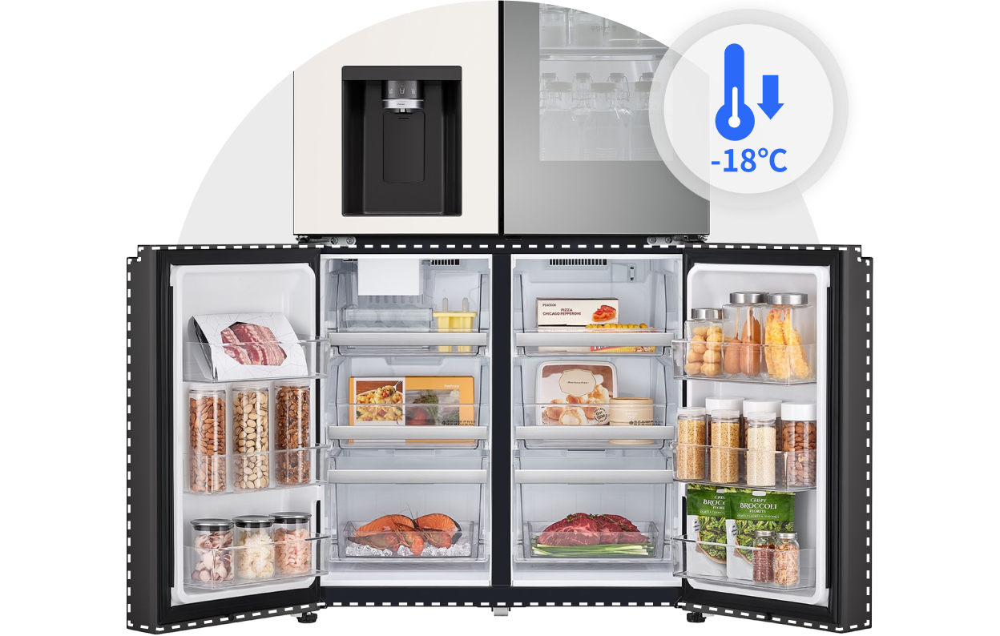
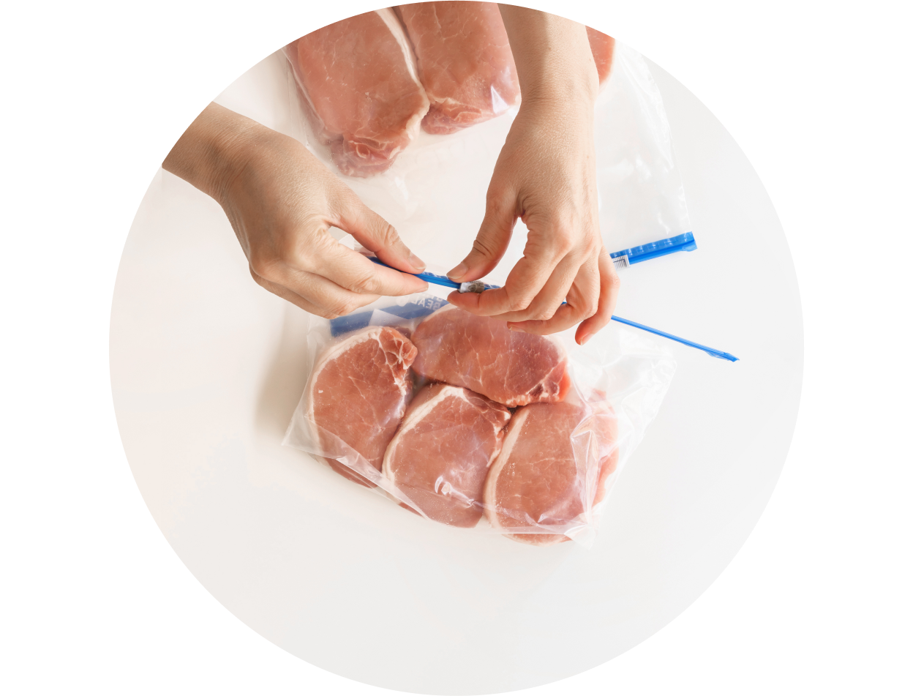
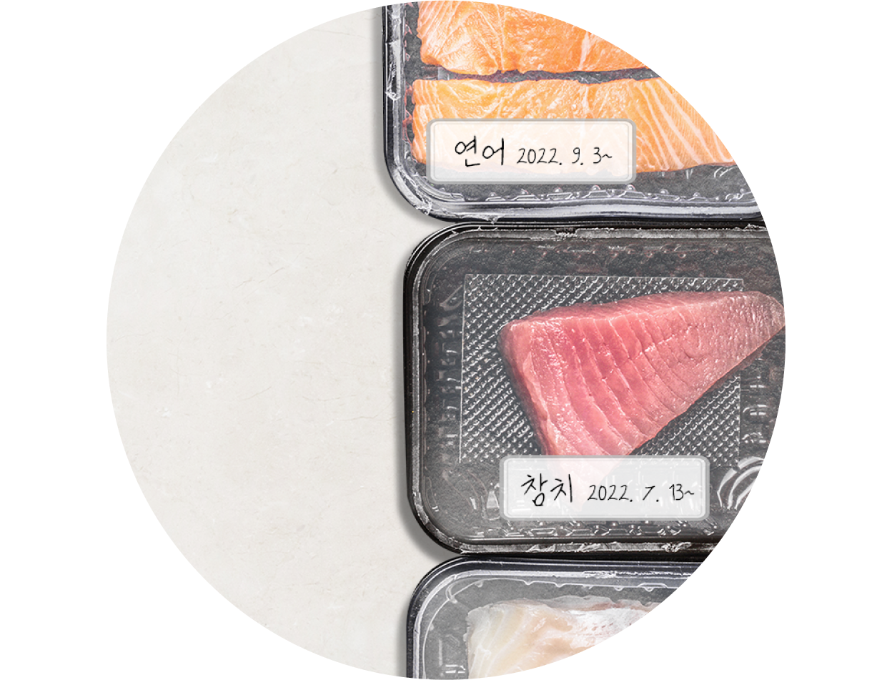
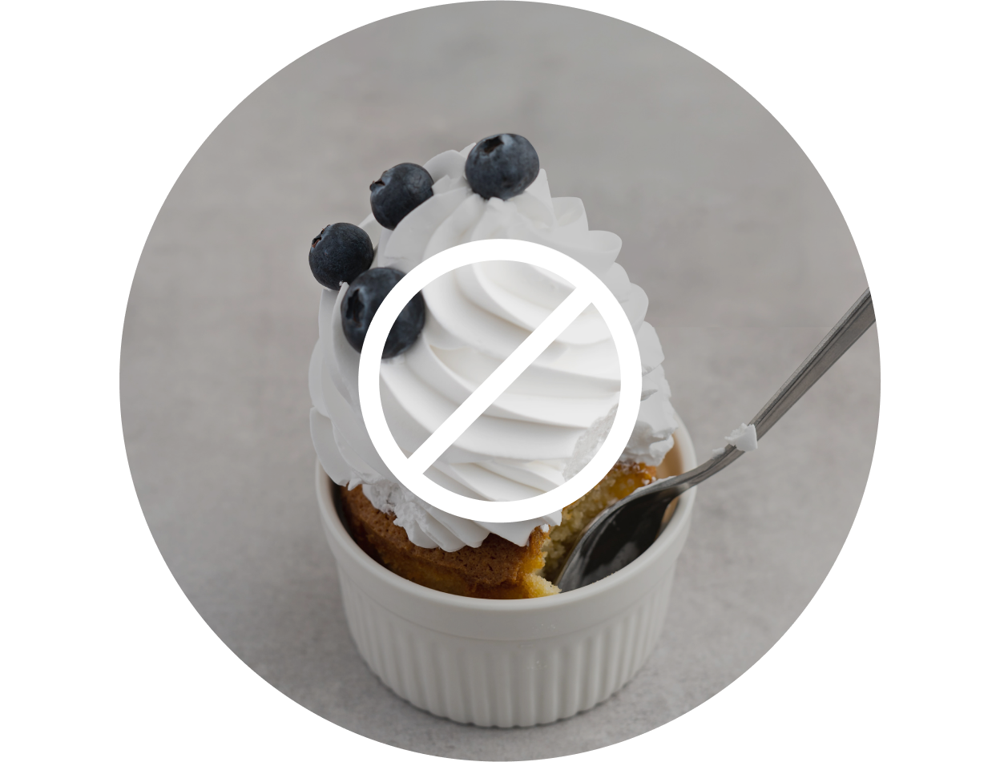
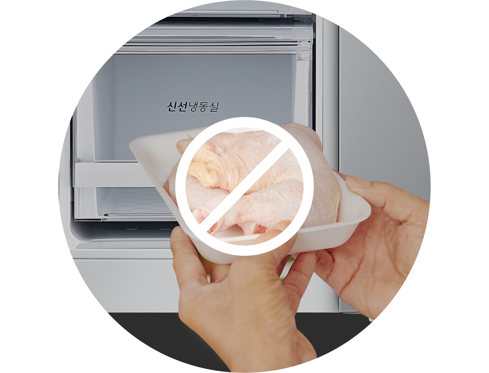
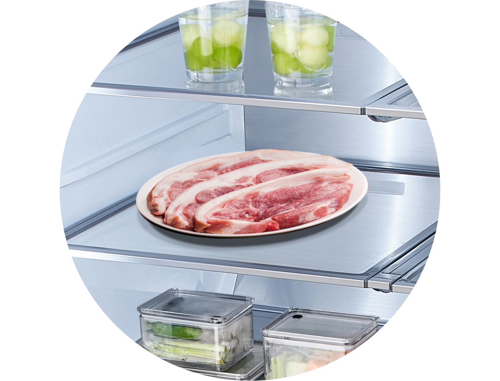
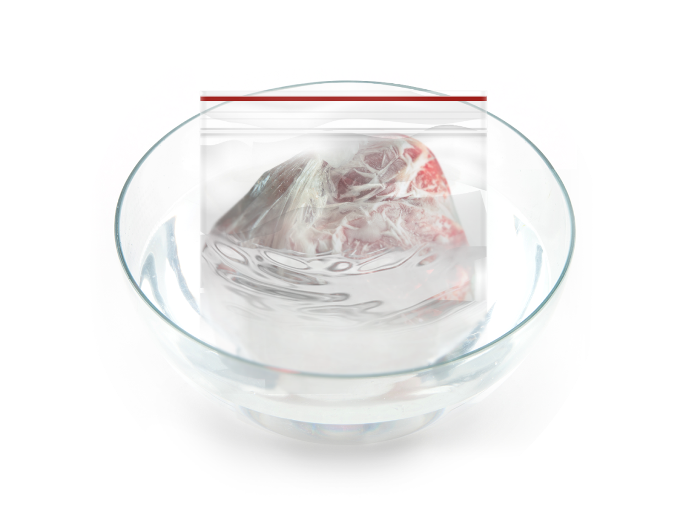
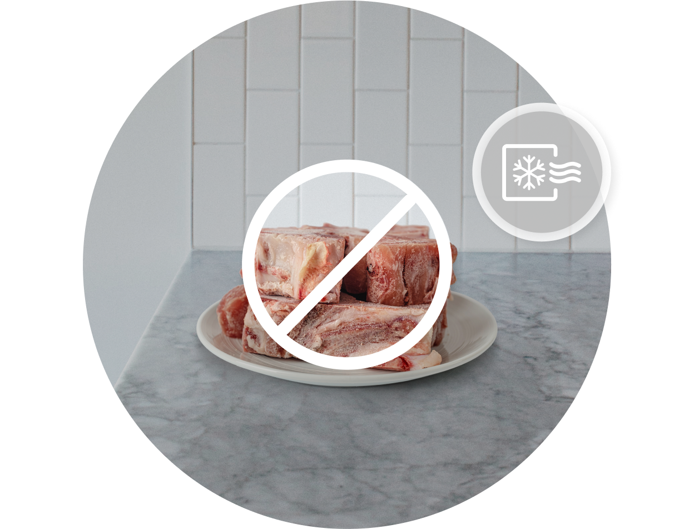
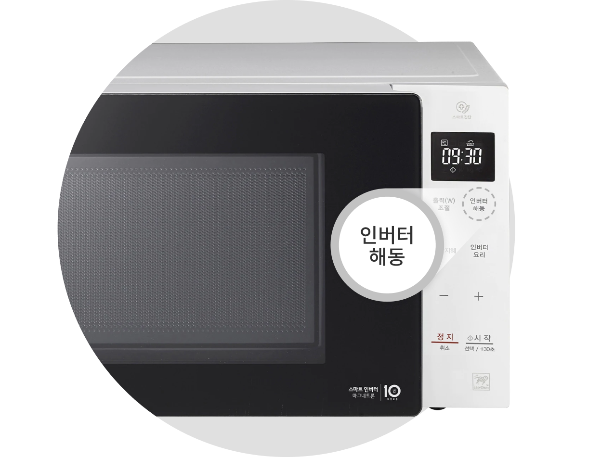

주방냉장고


보다 더 스마트한 일상
LG ThinQ의 시작

보다 더 스마트한 일상, LG ThinQ
씽큐는 사람과 가전을 AI 기술로 연결하여 더 편리하고 놀라운 일상을 만드는 LG전자의 스마트 홈 플랫폼입니다.
* 본 콘텐츠는 ThinQ 앱의 콘텐츠입니다.
냉동은 식품을 안전하고 오랫동안 저장할 수 있는 방법이죠. 그렇다고 무작정 냉동실에 넣어두는 게 정답은 아니에요.
대부분의 미생물은 -18℃ 이하에서 성장을 멈추므로 냉동은 효과적인 식품 저장 기술인 것은 맞지만, 냉동고 안에서도 박테리아는 서식할 수 있고 느리지만 식품의 변화도 진행되죠.
식품의 안전과 품질변화를 예방하기 위한 올바른 냉동과 해동 방법에 대해 알아볼까요?
신선하고 위생적인 냉동 방법
냉동실 온도는 -18℃ 이하로 유지하기
미생물 번식의 억제를 위해 온도는 -18℃ 이하로 유지하는 것이 좋죠. 특히 육류는 신속하게 냉동해야 식품 조직 중 수분 결정이 작아서 해동할 때 육즙의 손실도 최소화할 수 있어요.

소분하여 밀폐용기에 보관하기
밀폐용기나 지퍼백 등을 사용하여 보관하면, 공기 접촉이 최소화되어 식품이 산화되는 것을 예방할 수 있죠.
제대로 밀봉하지 않으면 식품 표면이 건조해지는 냉동 화상(Freezer burn)이 일어나 식품의 맛과 풍미가 감소될 수 있어요.
1회에 사용할 분량으로 소분하여 보관하면 해동할 때 사용할 만큼만 꺼낼 수 있어 불필요한 해동을 하지 않아도 되니 더 편리하고 위생적이죠.

적정 보관 기간 지키기
아무리 냉동실이라도 식품을 너무 오래 보관하면 식품 품질이 저하될 수 있으니 가능한 한 빨리 섭취하는 것이 좋아요.
적정 보관 기간은 식품의 특성과 보관 온도나 보관 방법, 식품 초기 품질 등의 환경에 따라 달라질 수 있어요.

냉동 보관하면 안 되는 식품
마요네즈, 크림, 요구르트 등은 냉동을 하면 층이 분리되거나 단백질이 응고되어 맛이 떨어지고, 캔 제품은 용기가 팽창되어 터질 수 있으니 냉동 보관하면 안 돼요.

해동한 식품을 다시 냉동하면 안 돼요
한번 해동한 식품을 다시 냉동하면 미생물 번식으로 위생에 문제가 생길 수 있으니 재 냉동은 절대 하지 마세요.

안전한 해동 방법
식품을 해동하는 방법은 여러 가지가 있지만, 해동되는 동안 미생물이 증식되지 않도록 안전한 온도로 유지하는 것이 가장 중요하죠.
특히 육류의 경우 해동과정 중 발생될 수 있는 육즙 유출을 최소화하여 질감과 맛, 영양소가 유지될 수 있는 방법을 선택하는 게 중요해요.
냉장실에서 해동하기
가장 좋은 해동 방법은 하루 전날 냉장실로 옮겨 해동하는 방법이에요. 시간이 걸리지만 해동 과정에서 미생물이 증식되지 않아 안전하고, 육류의 경우 유출되는 육즙 손실이 적어 품질 저하 현상을 최소화하며 해동할 수 있어요.

냉수에 해동하기
방수 기능이 되는 지퍼백 등에 넣어 차가운 물에 담가 해동하는 방법도 있죠. 하지만 물의 온도가 높아지지 않도록 온도를 체크를 하고 냉수로 계속 교체해 주는 노력이 필요해요. 물의 온도가 높아진 상태로 해동하면 미생물 증식이 빨라지고 식품 품질이 저하될 수 있어요.

전자레인지로 해동하기
식품의 양이 적을 때는 전자레인지를 활용해 해동하면 편리해요. 하지만 해동 시간이 과할 경우 부분적으로 과열되어 고기의 경우 익는 부분이 발생하거나 육즙이 유출되어 질감이 변화하는 등 품질 저하 현상이 발생할 수 있으니 주의해야 해요.
해동 후에는 즉시 조리해야 안전하게 섭취할 수 있어요.

실온에서는 해동하면 안 돼요
실온에서는 미생물이 급격히 증가하고 지방이 산패하여 위생과 품질이 저하될 수 있으니 실온 해동은 피해 주세요.

건강한 식생활을 위해선 냉동 못지않게 올바른 해동 방법을 아는 것이 중요하죠.


LG ThinQ
ThinQ 하나로 더 좋아지는 일상
일상을 더 편하고 스마트하게 만들어주는 씽큐 앱을 지금 바로 만나보세요.
- #식재료
- #식품
- #해동
- #냉동식품
- #냉동
- #냉동방법
- #해동방법
- #식품냉동방법
- #식품해동방법
출처 및 고지사항
[에코에너지기술연구소] 청소기 클리닝 ATLAS 개발 보고서 (2022.08)